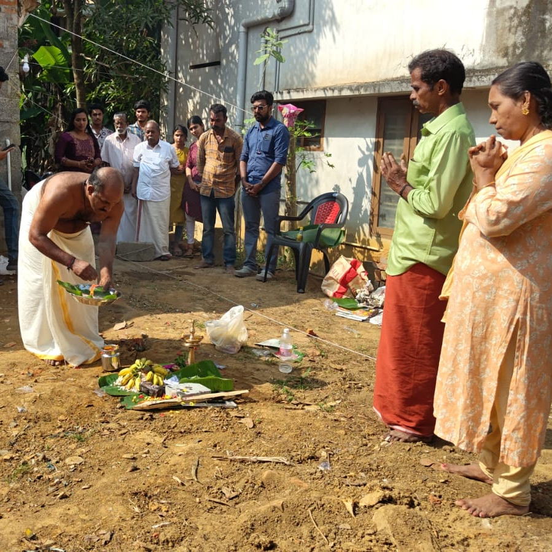

Snehaveedu (Project-1)
Snehaveedu (project - 1) was initiated by NSS SCTCE to provide homes for the needy. In collaboration with KTU-Chittilapally Foundation, we were able to undertake such a community project that would enhance our NSS volunteers in their personality development and creating a feel of empathy towards the needy people around us. We provided a house for a beneficiary residing in Neeramankara, TVM and the construction started on 17th January 2024.
See More..